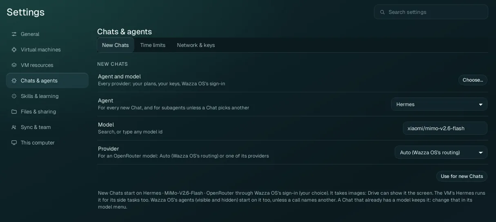
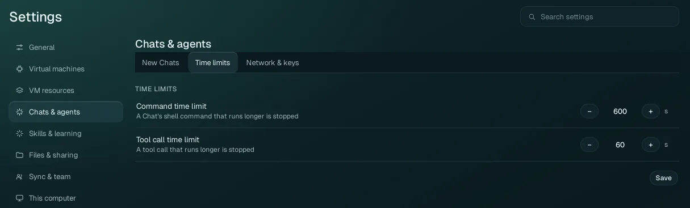
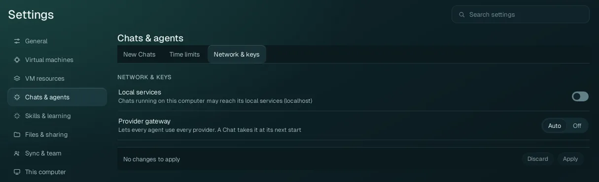

Settings › Chats & agents
The agent and model every new Chat starts with, how long an agent's command or tool call may run, and what Chats may reach on the network.
New Chats#

One default for every new Chat, and for the agents Chats start (unless a Chat picks another). It never changes a Chat that already exists: a Chat keeps its own agent and model (change them in that Chat's model window).
| Option | What it does |
|---|---|
| Agent and model › Choose… | Opens the same model window as a Chat's: every agent and every model your sign-ins, plans and keys give, with search. Pick there, and choose Default for new chats in its Apply to. (It opens once a Chat has started in this window.) |
| Agent | The agent (harness) of new Chats: Hermes, Prime Agent, Claude Code, Codex or Antigravity (only the ones that can run here are listed). |
| Model | The model of new Chats. Type to search, or type any model id the agent's provider knows
(for example openrouter/xiaomi/mimo-v2.6-flash). |
| Provider | Only for an OpenRouter model: Auto (Wazza OS's routing), or one of the companies OpenRouter offers that model from (choose one for its price, speed or data policy). |
| Use for new Chats | Saves the three as the default. The line under it says what new Chats start on now and where it comes from. |
With no default saved, new Chats start on a free model when one is available to you; signed in to a Wazza OS account, they start on MiMo. A Chat's agent takes a new default at its next start.
Time limits#

| Option | Range | Default | What it does |
|---|---|---|---|
| Command time limit | 10 to 7200 seconds | 600 s (10 minutes) | A shell (bash or terminal) command an agent runs that takes longer is stopped; the agent is told it timed out and goes on. |
| Tool call time limit | 10 to 1800 seconds | 60 s | A tool call that takes longer is stopped the same way. |
Save saves both (it checks the ranges first). Wazza OS's own tools take a change at their
next call; a Chat's own commands at the Chat's next start. Raise the command limit for long builds, renders or
downloads. From a terminal: wazza --gui timeouts set --command 1800 --tool 120.
Network & keys#

| Option | Values | What it does |
|---|---|---|
| Local services | Off (default) / On | Concerns Chats that run on your computer
(not in the VM), such as a Computer Control Chat. Off: they reach the Internet and Wazza OS, never your computer's
own services. On: from their next start they also reach services on your computer (localhost: a
development server, a database), while your keys and sign-ins stay hidden from them. Only you can turn it on; an
agent can only turn it off. |
| Provider gateway | Auto (default) / Off | Wazza OS's gateway lets every agent use every provider you have: for example Claude Code and Antigravity with a model of your ChatGPT plan, or any agent with a model of an API key or a custom API (Home › Sign in says, for each plan, which agents reach it directly and which through the gateway). Off: each agent uses only the providers it supports by itself. A Chat takes the change at its next start. |
The keys themselves are on Home › Sign in › API keys.